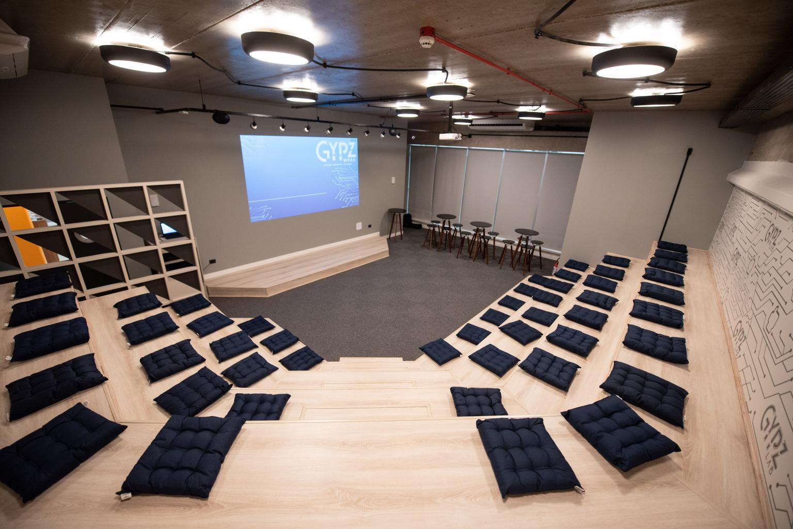
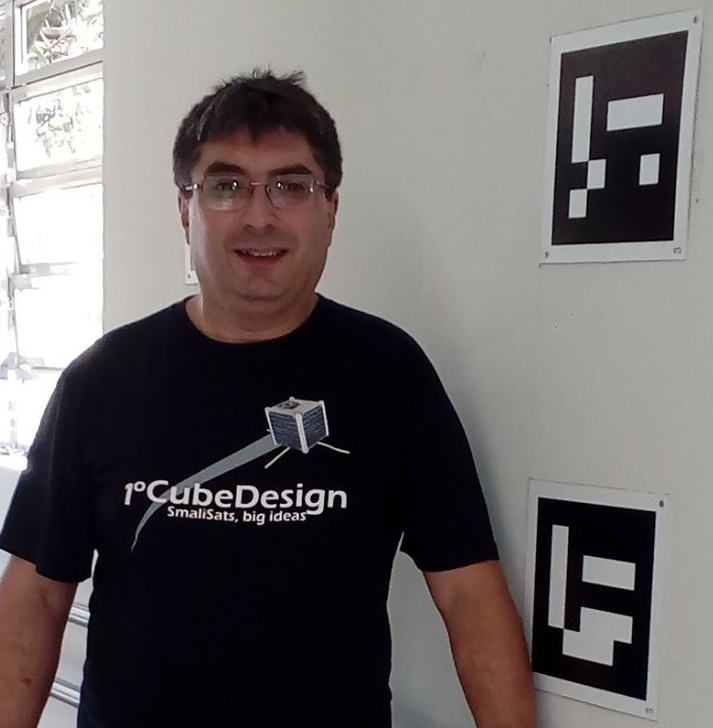

Sobre
O Python User Group do Vale do Paraíba (PUG-Vale) é uma iniciativa comunitária que tem o objetivo de reunir os desenvolvedores e demais interessados na linguagem de programação Python e em suas tecnologias associadas.
Para submeter palestras ao evento Clique Aqui
A Quarta edição aconteceu em 2018, e o intuito é retomarmos os encontros agora com certa frequência.
Através de palestras, painéis de debates e networking buscamos difundir a tecnologia Python na região do Vale do Paraíba, que tem um potencial imenso de desenvolvimento tecnológico.
Ajude-nos na divulgação e até o evento!
Localização
GYPZ Lab - DMCard
Av. Cassiano Ricardo, 521, GYPZ - 1 º Andar, Sala 8 Jardim Aquarius. São José dos Campos, SP
Palestrantes
-

10:20 às 11:00 Matemática com Python - Usando o Numpy, Matplotlib e Scipy
Lazaro Camargo
Profissional graduado em Engenharia Eletrônica pela Universidade do Vale do Paraíba (1998) e mestrado em Engenharia e Tecnologia Espaciais pelo Instituto Nacional de Pesquisas Espaciais (2018) e atualmente é doutorando do programa de pós-graduação do INPE. Foi professor na ETEP Faculdades nas áreas de sistemas embarcados, processamento digital de sinais e controle.Atua no INPE desde 1995 no desenvolvimento de software para controle e aquisição de dados de radares para sensoriamento da ionosfera e participa das equipes de desenvolvimento dos cubesats NanosatC-Br2, NanoMirax e RaioSat.
-
11:00 às 12:00 Integrando Power BI e Python: Viz & Análise de dados
Aditya Venkata e Andre Oliveira
Andre Oliveira - Profissional com mais de 10 anos de experiência em TI na área de desenvolvimento de soluções de software focado em em analytics e integração de sistemas. Data Engineer no segmento de healthcare.
Aditya Venkata - Analista de TI com experiência em desenvolvimento de software e gerência de projetos Atualmente desenvolvendo soluções na área de inteligencia de negócio voltada para saúde.
-
13:30 às 14:10 O que é Inteligência Artificial e onde Python entra nisso.
Luis Vitorio
Luís Alberto Lemes Vitório - Programador Python, SQL e Analista de dados. Graduado em Gestão de TI pela Estácio e Especialista em Big Data (Data Analitycs) pela Universidade Presbiteriana Mackenzie. Apaixonado por programação, tecnologias, inovações além de 15 anos de experiência no mercado tecnológico.
-
14:15 às 14:55 Python Como Ferramenta de Machine Learning
Mauro Assis
Mauro Lúcio Rodrigues de Assis, engenheiro agrícola pela UFV, especialista em Gestão de Projetos pela FGV, mestre em Computação Aplicada (BigData) pelo INPE, tem 30 anos de experiência em programação de computadores, tendo participado de projetos de TI em todo o Brasil e em países como Finlândia, Letônia, Alemanha, Escócia, Canadá, Chile, Uruguai e Argentina.
-
15:15 às 15:55 FastAPI e Type Hints: Suas aplicações mais confiáveis e descritivas.
Marcelo Lino
Desenvolvedor Back-End desde 2015, apaixonado por Python e entusiasta da linguagem. Atualmente trabalhando remotamente para a Órama DTVM.
-
16:00 às 16:40 FishBowl
FishBowl a ser debatido com assunto sugerido no momento
Agenda
| Horário | Palestrante | Descrição |
|---|---|---|
| 9:40 às 10:00 | Credenciamento | - |
| 10:00 às 10:20 | Abertura oficial | - |
| 10:20 às 11:00 | Matemática com Python - Usando o Numpy, Matplotlib e Scipy INPE | Usando o Numpy, Matplotlib e Scipy, o Python torna-se um ambiente para computação cientifica comparavel a outros pacotes como o Matplab ou o Origin. |
| 11:00 às 12:00 | Integrando Power BI e Python: Viz & Análise de dados J&J | Power BI e similares nos permitem criar visualizações dinâmicas de forma simples e intuitiva. Python é uma das linguagens mais usadas para análise e ciência de dados além de aprendizagem de máquina. Com a integração podemos aumentar a capacidade de transformação de dados do Power BI, criar visualizações diferentes além de análises avançadas. |
| 12:00 às 13:30 | Intervalo: Almoço | - |
| 13:30 às 14:10 | O que é Inteligência Artificial e onde Python entra nisso. | Aqui será abordado o que é Inteligência Artificial e qual a importância do Python no desenvolvimento dessa tecnologia. Também vamos dar uma olhada rápida no mercado de trabalho e apresentar alguns frameworks populares de I.A como Sklearn, Tensorflow, Keras, Pytorch e demostrar um exemplo prático de utilização. |
| 14:10 às 14:15 | Pausa para a troca de palestrante | - |
| 14:15 às 14:55 | Python como ferramenta de Machine Learning | Será feita uma pequena introdução sobre machine learning. Em seguida, será apresentada a plataforma opensource H2O.ai como alternativa para implementação dos conceitos vistos na introdução. Por fim será exibido um caso prático em que a plataforma foi utilizada para a estimativa da biomassa da Amazônia. |
| 14:55 às 15:15 | Intervalo: Coffee Break | - |
| 15:15 às 15:55 | FastAPI e Type Hints: Suas aplicações mais confiáveis e descritivas. ORAMA | Type Hints estão presentes no python desde a versão 3.5 como uma forma inferir tipos ao nosso código python. Mas o que aconteceria se uníssemos essa possibilidade aos frameworks que conhecemos? Essa é a proposta do FastAPI, um framework que une a simplicidade de outras ferramentas como Flask e o poder dos type hints para nos entregar uma API auto documentável e descritiva, além de rápida. |
| 15:55 às 16:00 | Pausa para a troca de palestrante | - |
| 16:00 às 16:40 |
|
- |
| 16:40 às 17:00 | Sorteios | - |